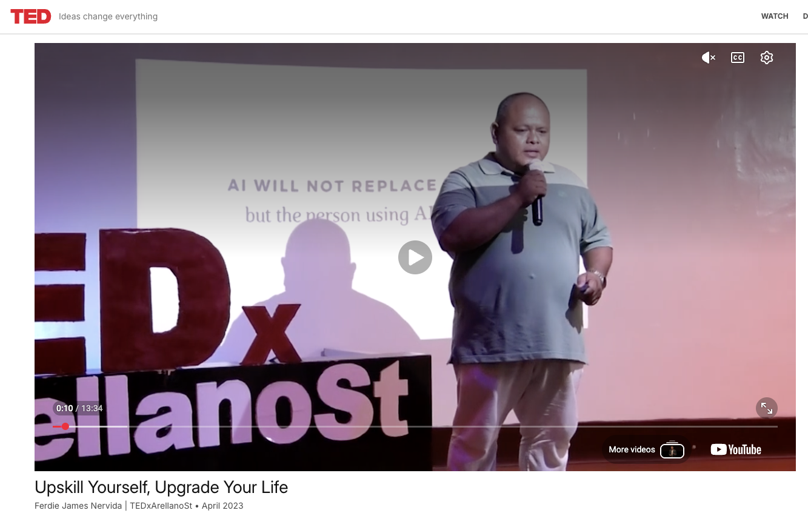

For financial institutions and financial crime teams
Crypto AML and fraud investigations training for regulated teams.
Ferdie Nervida helps banks, digital banks, fintechs, e-wallets, payment companies, and financial crime teams build practical capability for crypto-related fraud, blockchain intelligence, wallet tracing, AML red flags, and digital asset risk.


Client problem
Crypto-related risk is entering normal fraud and AML operations.
Teams are receiving wallet addresses, exchange references, transaction hashes, scam reports, and blockchain intelligence outputs. The need is not general blockchain education — it's practical investigation capability.
Services
Training and advisory support for crypto-related financial crime.
Why organizations work with Ferdie
Experience that helps regulated teams understand and act.
Ferdie has delivered cybersecurity, blockchain forensics, and digital asset risk training for government, law enforcement, public sector, academe, and professional organizations.

Featured in / trained with

Client reviews
Participants value practical examples and clear investigation guidance.
“The breakdown of how law enforcement can use blockchain forensic tools to uncover money trails was informative and practical.”— Training participant
Complex cryptocurrency concepts become easier to understand and apply.
— Compliance leadThe training helps teams understand evidence preservation and investigative use cases.
— Fraud operations managerInsights
Analysis on crypto fraud, regulation, and digital asset risk.
Need to strengthen your team's crypto fraud and AML capability?
Send a short note with your organization, team, timeline, and the kind of crypto-related cases or risks your team is seeing.